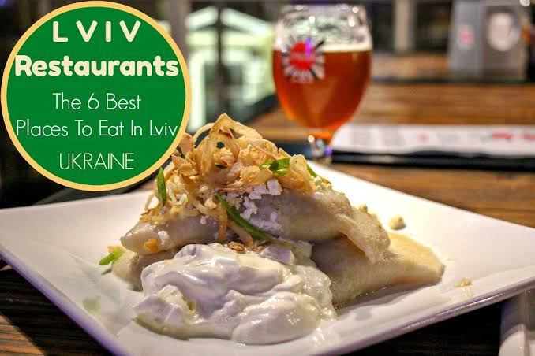
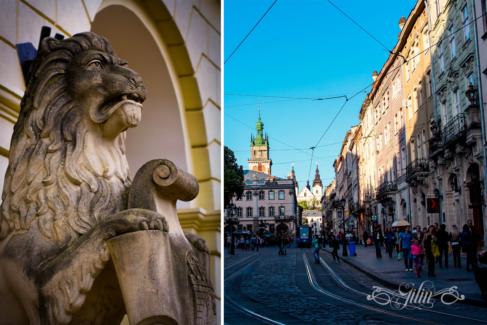
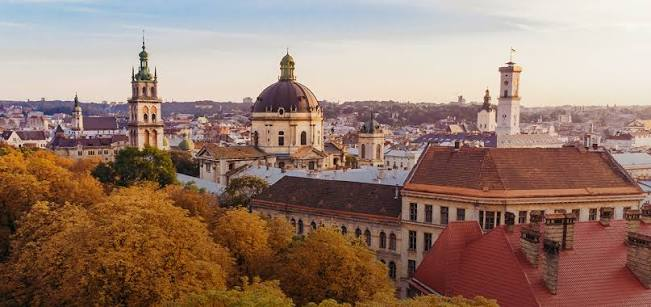

Визначні пам'ятки
Історичний центр Львова зачаровує брукованими вулицями, кам'яницями та атмосферою старого міста.

Кухня та гастрономія
Львів славиться кавою, шоколадом і ситними стравами — обов'язково скуштуйте місцеві вареники.

Культура та традиції
Архітектура площі Ринок, старовинні храми та міські легенди формують неповторний характер Львова.

Особисті історії
Найбільше запам'яталася прогулянка дахами й вуличками старого міста на заході сонця.
